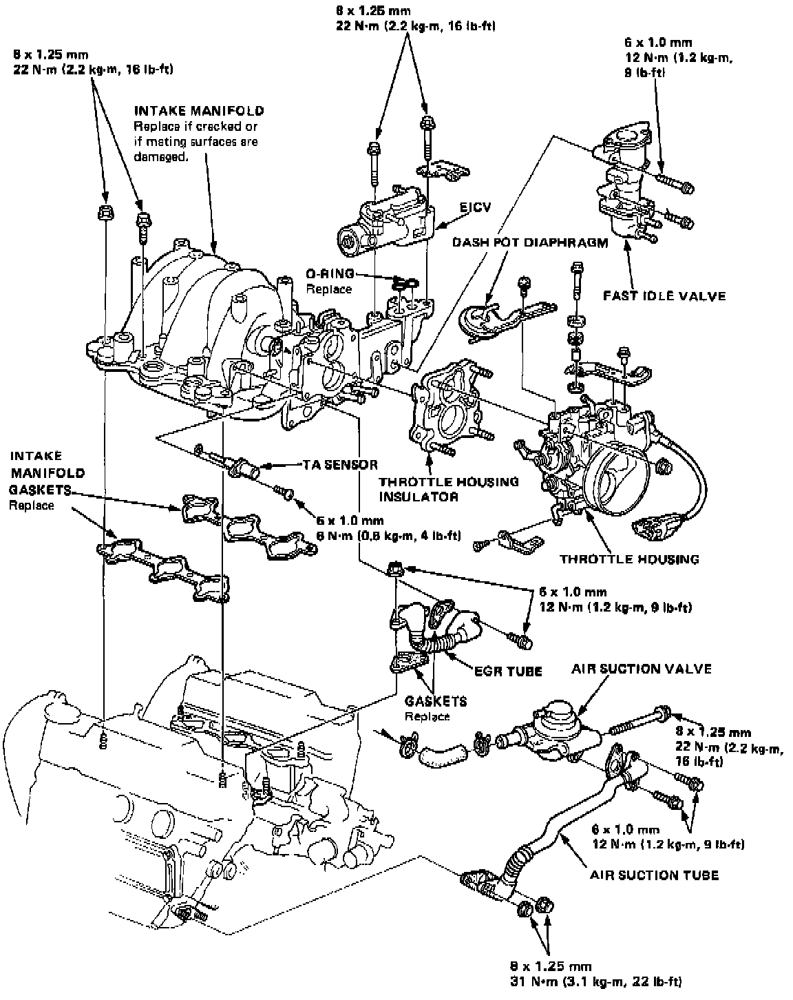
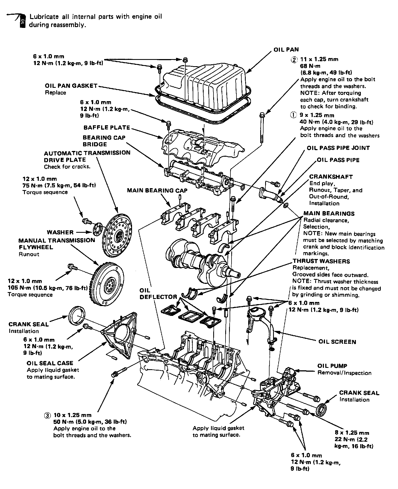
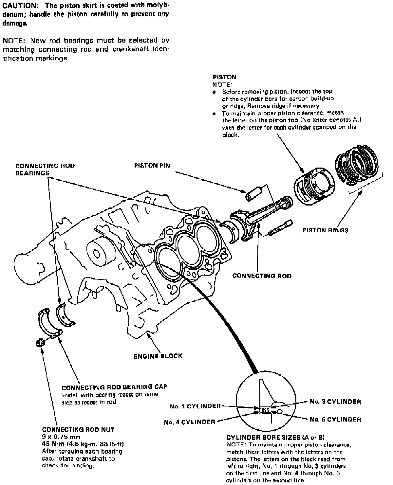
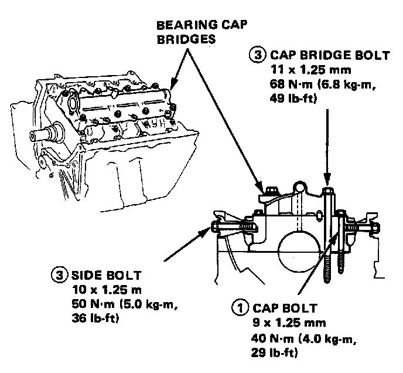
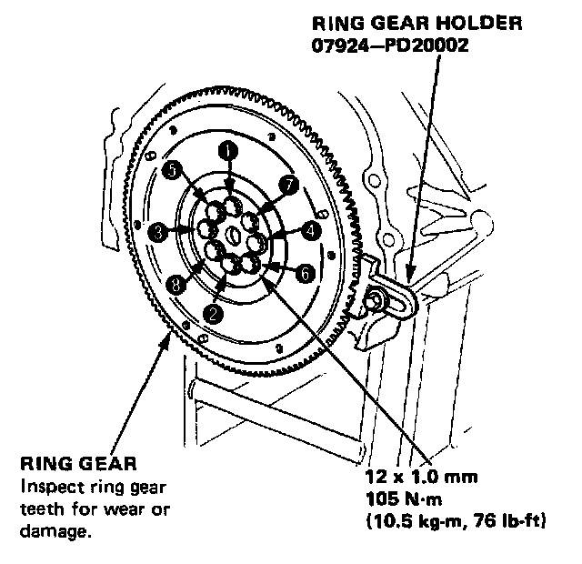
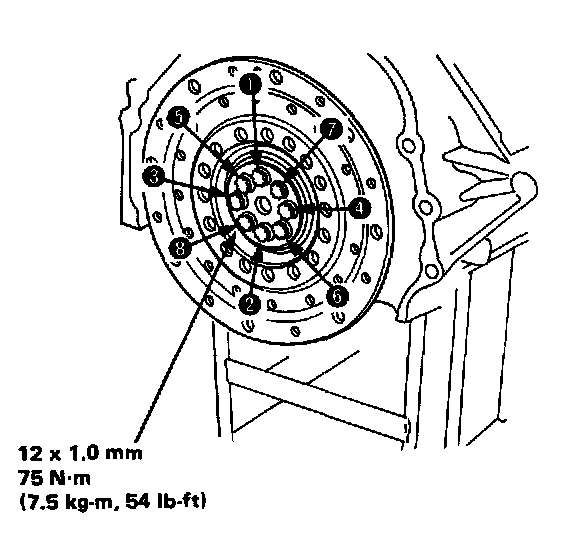

Torque and Sequence
Intake:

Exhaust Manifold:

Upper Engine:


Head Bolt Torque Sequence:

Tighten head bolts, in sequence, in two steps:
1st step: Tighten to 40 N.m (4.0 kg-m, 29 lb.ft)
2nd step: Tighten to 78 N.m (7.8 kg-m, 56 lb.ft)
Timing Components:

Lower Engine:


Engine Lubrication:

Main Bearing Cap Bolt Torque:


Flywheel Bolt Torque Sequence:

A/T Drive Plate Torque Sequence:
